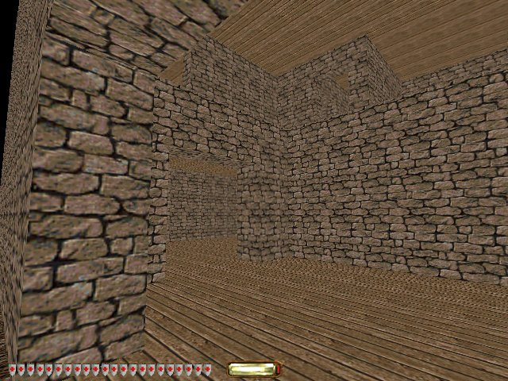

Thief Level : Week 2
This week I spent a little while considering the backstory of the level, and now have at least a rudimentary scenario: Garrett the thief is taking an opportunistic foray into the local Shope of Curiosities, having heard that their prize exhibit, the McGuffin of Antioc, has been removed from its high-security public display, in order to be cleaned or maintained somewhere on-site.
On top of this, I've been refining the layout of the museum building, starting with the two-storey entrance hall, complete with a balcony running round it:

Plus, I've been planning the possible routes a thief might take to get from one room to another. Generally, the conventional paths - in through the main entrance and up the stairs and down the corridor - will be blocked by guards. So the player has to clamber up the outside of the building, explore the roof, dangle from a rope, pick a lock, find a key in the janitor's quarters, which opens all the windows, and ledges outside a couple of windows lead somewhere interesting, etc. I don't want it to turn into a key fetch quest, but at the same time, I don't want the player to be able to simply waltz all through the whole building. I've tried to engineer a single interesting primary route through the building, with the possibility of a few minor variations so players feel like they can exercise some freedom and decision making.

Having done all that, I'm now quite happy that my plans are sufficient to produce a small but adequate level. I'll aim to get that complete, and any fancy window dressing I can layer on top will be a bonus.
I completed the modelling of all the rooms in the building, and doorframes inbetween them. I applied some quick floorboard textures to differentiate the floors and ceilings from the walls. Here you can see the view from the main entrance, looking into the two-storey entrance hall, with the balcony around it visible up on the next level:

And the view while approaching the top of the stairs, looking down over the balcony. There will be a railing when it's done:

Thanks heaps to Qolelis for a comment with a tip about textures on stairways, to rotate the texture 90 degrees on each stair's vertical rise. I only just saw that, but will definitely apply it this week.
Update: I feel a bit self-concious that I'm creating the bare minimum that could qualify to be a Thief level. There is not yet a lively, engaging backstory to the level, complete with colorful characters, cleverly intertwined with the canon of the original game.
Similarly, the mechanical contents of my level are as simple as possible. I haven't stretched myself, thinking of imaginative locations or motives for Garrett to explore. I do not plan to have any clever special objects or custom scripting in my level, defining dramatic changing mission objectives as the player reveals new information. It's a very straightforward 'get into a building, steal the loot, and get out'.
Partly this is very deliberate - I want the level to be as minimal as it can possibly be, so as keep it achievable. But also, this is partly in response to my feeling that being creative is hard, especially when under pressure. Right now I feel as though I have enough to worry about just getting to grips with the minutia of the level editor. I almost feel as if I need to become comfortable with that before I can relax enough to get creative with it.
This isn't entirely unexpected. Clearly one cannot do great work on one's first attempt. But at the same time, I don't want to just 'give up' on the creative aspects. I want to do as good a job as I can do, under the constraints of a small, straightforward 'first time' level done in a reasonable timeframe. So maybe I just need to keep iterating. Embelish the dramatic backstory little by little, see what occurs to me as I go on. Look for some flash of inspiration as I bury myself in the process. Fair enough. Baby steps.
Update 2: I created a quick TODO list, as a first approximation of how much work there is to be done. I ended up with a list of 67 mandatory items (eg. Add doors inside each door frame; First pass at lighting; Add balcony railing.) In addition I have 18 optional items (eg. Add carpets and rugs; Hide moss arrows in the garden; Entrance hall main exhibit.) The screenshots above represent about six completed items (eg. Dromed tutorials; first floor rooms; doorways and arches between rooms; staircase.) So at the current rate, it's roughly 28 weeks of work, which is double or triple what I'd planned on. Hopefully my rate of completing items will increase substantially as I get into the groove. I'll have to monitor this going forward, and slash scope if I can't drastically accelerate.
Comments